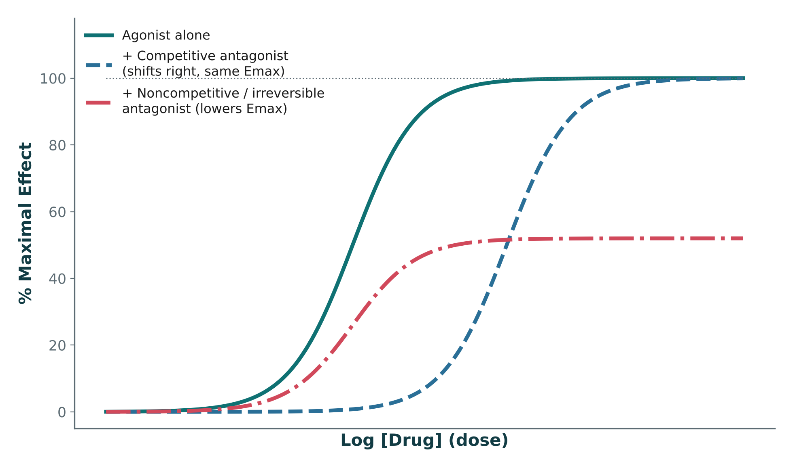
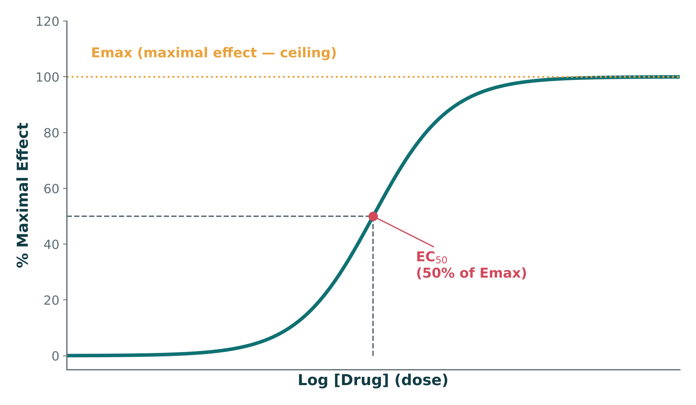
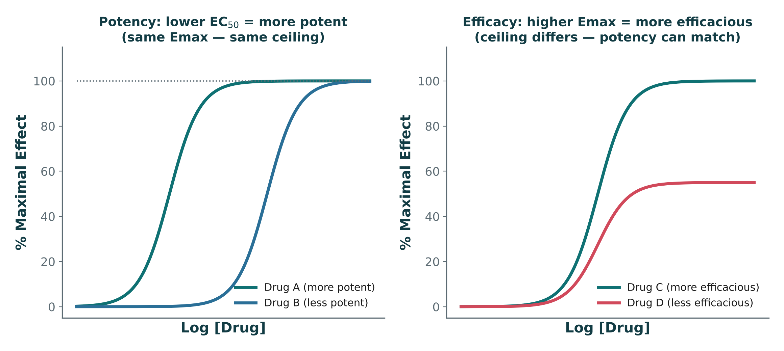
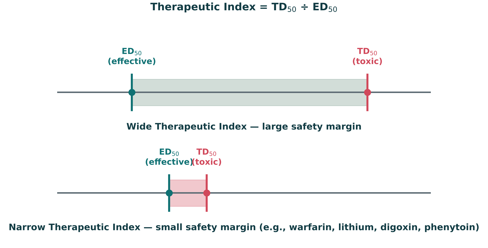
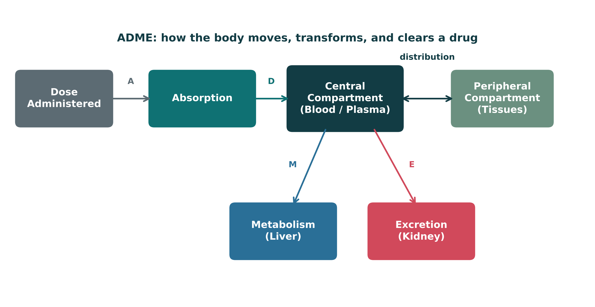

Current lecture
Introduction to Pharmacology — Session 1
Unit 1 · Session 1 · Thursday, October 15 · Katzung Ch. 1, 2, 3
1The Language of Pharmacology2Drug Development & Regulation3Pharmacodynamics: Targets & Receptors4Dose-Response Relationships5Pharmacokinetics: ADME — Absorption & Distribution
High-yield from this lecture
- PK = what the body does to the drug (ADME); PD = what the drug does to the body (receptors & effect).
- Efficacy = ideal trial conditions; effectiveness = everyday practice (adherence, comorbidities).
- Drug → target → signal transduction → response.
- Potency = dose needed (EC₅₀, lower = more potent); efficacy = Emax (ceiling).

Figure 1 · Agonist & antagonist effects →
Figure 2 · The sigmoidal dose-response curve →
Figure 3 · Potency vs. efficacy, side by side →
Figure 4 · Wide vs. narrow therapeutic index →
Figure 5 · The ADME compartment model →Your progress
Objectives checked off0 / 10
Flashcards you know0 / 62
Self-test answered right0 / 25